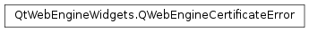

QWebEngineCertificateError¶
Synopsis¶
Functions¶
- def
error() - def
errorDescription() - def
isOverridable() - def
url()
Detailed Description¶
The
PySide2.QtWebEngineWidgets.QWebEngineCertificateErrorclass provides information about a certificate error.Provides information about a certificate error. This class is used as a parameter of
QWebEnginePage.certificateError().
-
class
PySide2.QtWebEngineWidgets.QWebEngineCertificateError(error, url, overridable, errorDescription)¶ Parameters: - errorDescription – unicode
- error –
PySide2.QtCore.int - overridable –
PySide2.QtCore.bool - url –
PySide2.QtCore.QUrl
-
PySide2.QtWebEngineWidgets.QWebEngineCertificateError.Error¶ This enum describes the type of certificate error encountered.
The values of this enum type match the SSL errors Chromium provides.
QSslError.SslErrorvalues are not used directly, because the Qt error categories cannot be mapped to the Chromium error categories.Constant Description QWebEngineCertificateError.SslPinnedKeyNotInCertificateChain The certificate did not match the built-in public keys pinned for the host name. QWebEngineCertificateError.CertificateCommonNameInvalid The certificate’s common name did not match the host name. QWebEngineCertificateError.CertificateDateInvalid The certificate is not valid at the current date and time. QWebEngineCertificateError.CertificateAuthorityInvalid The certificate is not signed by a trusted authority. QWebEngineCertificateError.CertificateContainsErrors The certificate contains errors. QWebEngineCertificateError.CertificateNoRevocationMechanism The certificate has no mechanism for determining if it has been revoked. QWebEngineCertificateError.CertificateUnableToCheckRevocation Revocation information for the certificate is not available. QWebEngineCertificateError.CertificateRevoked The certificate has been revoked. QWebEngineCertificateError.CertificateInvalid The certificate is invalid. QWebEngineCertificateError.CertificateWeakSignatureAlgorithm The certificate is signed using a weak signature algorithm. QWebEngineCertificateError.CertificateNonUniqueName The host name specified in the certificate is not unique. QWebEngineCertificateError.CertificateWeakKey The certificate contains a weak key. QWebEngineCertificateError.CertificateNameConstraintViolation The certificate claimed DNS names that are in violation of name constraints. QWebEngineCertificateError.CertificateValidityTooLong The certificate has a validity period that is too long. (Added in Qt 5.7) QWebEngineCertificateError.CertificateTransparencyRequired Certificate Transparency was required for this connection, but the server did not provide CT information that complied with the policy. (Added in Qt 5.8)
-
PySide2.QtWebEngineWidgets.QWebEngineCertificateError.error()¶ Return type: PySide2.QtWebEngineWidgets.QWebEngineCertificateError.ErrorReturns the type of the error.
-
PySide2.QtWebEngineWidgets.QWebEngineCertificateError.errorDescription()¶ Return type: unicode Returns a short localized human-readable description of the error.
-
PySide2.QtWebEngineWidgets.QWebEngineCertificateError.isOverridable()¶ Return type: PySide2.QtCore.boolReturns whether this error can be overridden and accepted.
-
PySide2.QtWebEngineWidgets.QWebEngineCertificateError.url()¶ Return type: PySide2.QtCore.QUrlReturns the URL that triggered the error.
© 2018 The Qt Company Ltd. Documentation contributions included herein are the copyrights of their respective owners. The documentation provided herein is licensed under the terms of the GNU Free Documentation License version 1.3 as published by the Free Software Foundation. Qt and respective logos are trademarks of The Qt Company Ltd. in Finland and/or other countries worldwide. All other trademarks are property of their respective owners.